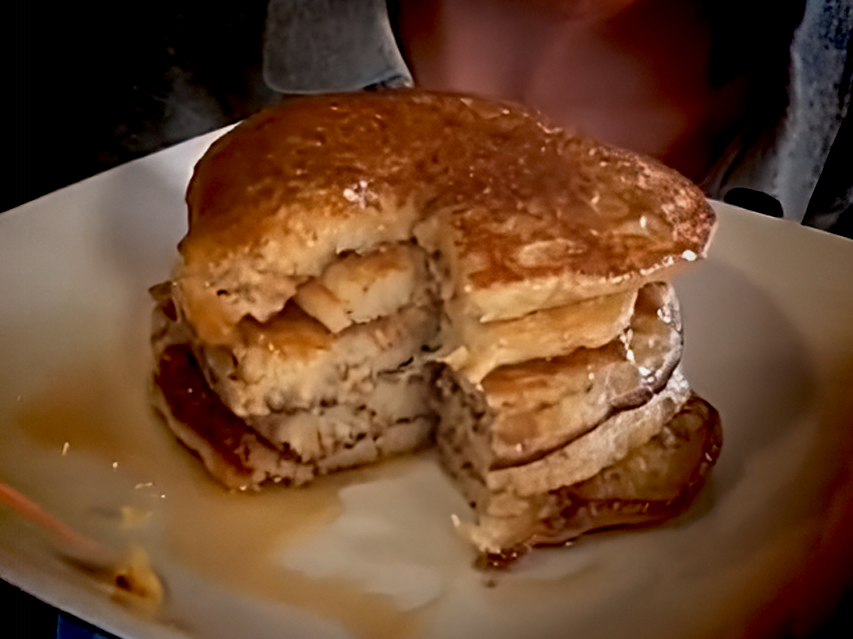

Leftover Bread Pancakes

Description
Leftover bread pancakes is a classic mix
of Leftover, Bread, and Pancakes.
Would you like to cook a
Leftover bread pancakes for your own
consumption? A person published this approximately 1,947
years after Jesus got birth. Thanks to
B. Dylan Hollis
for these cakes!
Ingredients
- 7-8 slices stale bread
- 3/4 cup Milk of Cow
- 1 pinch salt
- 2 tbsp sugar (double if serving to Child)
- 1 tsp Powder of Baking
- 1 Egg of Chicken
- bit of oil
Steps
- Tear up the breads and add to a bowl.
- Introduce your Milk of Cow.
- Mix with aggression.
-
Introduce your salt pinch, sugar, Powder of Baking,
and Egg of Chicken.
-
Beat thoroughly. IMPORTANT: Be
thoroughly with your beats.
-
Add bit of oil to a pan, and dump that batter up in
there.
-
Cook for 180 seconds on each side. Medium-high hot
levels. Remove with spatula when cooking is complete.
Look at you go, Captain Spatula! Very good.
-
Eat it with gusto, into your face. Add syrup (ideally
before eating), if that's your jam. Also try jam, in
that event.
Home